|

Italeri 1/48 Republic F-84F Thunderstreak
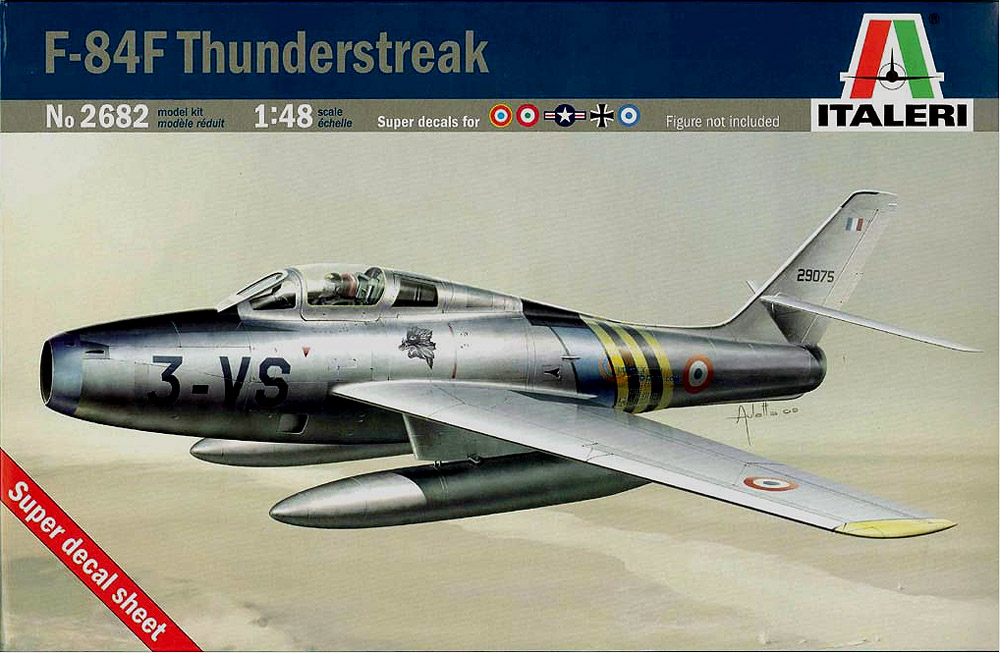
Kit #2682 MSRP $55.00 $28.00 from E-Bay
Images and text Copyright © 2012 by Adam Longenecker
Developmental Background
In 1949 Republic gave its F-84 a new swept wing and tail and fitted it with a J35-A-25 engine in hopes of bringing its performance up to that of the F-86 Sabre. The performance gain over the straight wing F-84 was considered minor. Nevertheless the aircraft was ordered into production as the F-84F Thunderstreak. The F-84 designation was retained because it was thought that the F-84F would be a low cost improvement of the F-84 with around 55% parts commonality. In reality, after development was completed the aircraft would share only about 15% parts commonality. Development and production of the Thunderstreak was slow due to handling issues, engine problems, and parts shortages. So much so that the aircraft was not declared operational until May 1954. Continual problems with the new J65 engine caused the whole fleet to be grounded in 1955 and all aircraft were phased out by 1958. Tensions over the Berlin Wall in 1961 caused the whole fleet to be activated once more. In 1962 the fleet was again grounded, this time due to corrosion. A program was undertaken to bring each and every aircraft back to full operational status. The Thunderstreak was then retired from active duty in 1964. It was retired from ANG units in 1971 due to stress corrosion. The last F-84Fs in service anywhere were retired from the Hellenic Air Force in 1991. Despite it's numerous and repeated problems I have always thought the F-84F just looked cool. It looks fast and mean yet elegant. That is to me how an aircraft is supposed to look. Please come along with me as I examine Italeri's reboxing of Kinetic's 1/48 F-84F Thunderstreak.
The Kit
The kit comes in a rather large top opening box with a nice rendition of the aircraft on top. Upon opening the box one is greeted by 4 sprues of gray plastic bagged together and one sprue of clear plastic bagged separately compromising 91 parts.
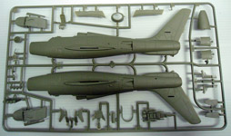
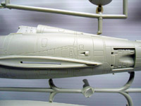
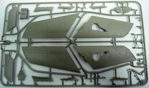
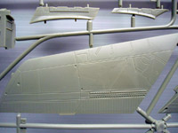
You may click on these small images to view larger pictures
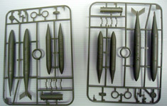
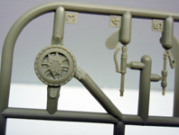
The plastic is nice and crisply molded and I had to try hard to find a speck of flash anywhere. The detail is also crisp and there is a lot of it molded into the very modest part count. The pane lines are an area some may not like. They are more akin to the Airfix "trenches" some do not like but they are okay to me. Rivet detail is petite yet there is a lot of it. Again this may bothersome but I can put up with it. 20 grams of nose weight is required to keep this bird from tail sitting. There is plenty of area provided to put it and the nose gear looks robust enough to support it. The only ordnance provided are fuel tanks. There are no bombs or rockets.
When I pulled the little bag of clear parts out I was disappointed to see that the main canopy had completely broken off the sprue. However it was not scratched and it had broken off in a way that did not actually damage the clear part. Detail on the clear parts is crisply rendered and the canopy sections are commendably clear. They could probably be a little thinner but I think they will work just fine.
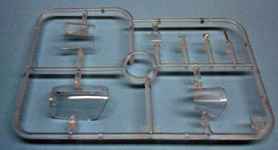
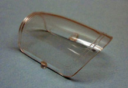
Decals and Instructions
One of the real eye catchers in this kit is the decal sheet. It is colorful and HUGE! Markings for four colorful aircraft are provided as well as a full set of stencils. Marking are for the US, German, Italian, and Greek Air Forces. The first 3 being in NMF while the Greek scheme is a rather striking 3 tone camouflage.
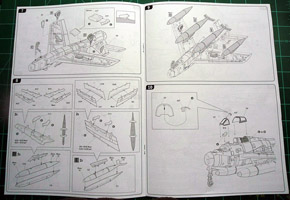
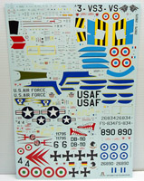
I have never used Italeri decals before so I do not know how they behave. I must say though that they look a little thick. Hopefully they will settle down ok under some Micro Sol. Also of note is that while the decal sheet is very colorful, a lot of the decals are just big swaths of color that I know a lot of modelers would just prefer to paint.
The instructions come in an A4 size booklet with actual pages and not the one continuous 60 foot long folding sheet common to some other manufacturers. The instructions are clear and thorough with color call outs throughout in Model Master numbers. I am a little confused about the decal stencil placement as it just has the decal number going with a line to the model. It does not show all the little stencils positioned on the actual model. The paint instructions for the NMF aircraft are also a little ambiguous as they are done in black and white and you can’t really tell the shades of aluminum apart.
Conclusions
In conclusion, for the low parts count of a kit this size, you get a rather well detailed rendition of the F-86F. If the fit is as good as the molding quality this should be a relatively trouble free build. That coupled with the very colorful schemes present in this kit should build up into a very striking model. I would have liked to have seen some bombs and rockets and maybe the panel lines could be a bit more petite, but that's minor to me. Overall I can't wait to get started on mine.
Adam Longenecker
January 2012
Aircraft history sourced from Wikipedia
|


{kind=link}
{kind=link}
{kind=link}
{kind=link}
{kind=link}
{kind=link}
{kind=link}
{kind=link}
{kind=link}
{kind=link}